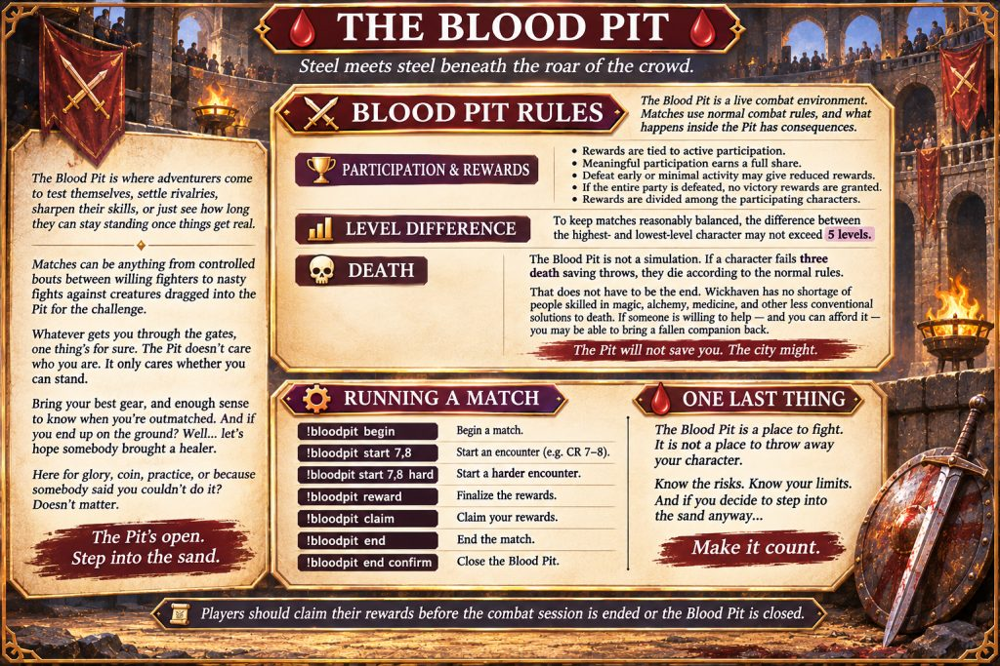

Adventuring
The Blood Pit
Steel meets steel beneath the roar of the crowd.

The Blood Pit is where adventurers come to test themselves, settle rivalries, sharpen their skills, or just see how long they can stay standing once things get real. Matches can be anything from controlled bouts between willing fighters to nasty fights against creatures dragged into the Pit for the challenge.
The Pit doesn't care who you are. It only cares whether you can stand.
The rules
Rewards
- Tied to active participation; meaningful participation earns a full share.
- Defeat early or minimal activity may mean reduced rewards.
- If the whole party is defeated, no victory rewards.
- Rewards are split among the characters who took part.
Level difference
To keep matches reasonably balanced, the gap between the highest- and lowest-level character can't be more than 5 levels.
Death
The Blood Pit is not a simulation. Fail three death saving throws and your character dies by the normal rules.
That doesn't have to be the end: if someone is willing to help, and you can afford it, a fallen companion may be brought back. See Faiths.
Running a match
| Command | What it does |
|---|---|
!bloodpit begin | Begin a match |
!bloodpit start 7,8 | Start an encounter (for example, CR 7–8) |
!bloodpit start 7,8 hard | Start a harder encounter |
!bloodpit reward | Finalize the rewards |
!bloodpit claim | Claim your rewards |
!bloodpit end | End the match |
!bloodpit end confirm | Close the Blood Pit |
Claim your rewards before the combat session is ended or the Blood Pit is closed.
The Blood Pit is a place to fight. It is not a place to throw away your character. Know the risks. Know your limits. Make it count.